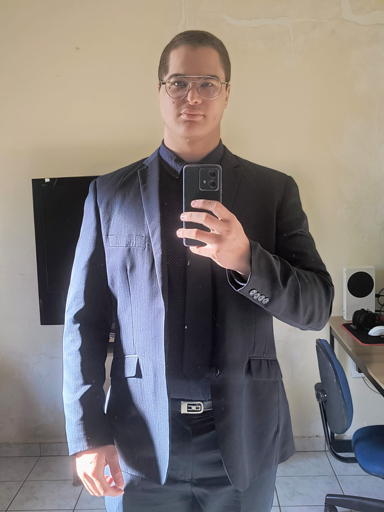

// bem-vindo ao meu perfil
ABNER SALATIEL
de Oliveira
Estudante de Sistemas para Internet, movido a café, rally virtual e código. Bem-vindo ao meu cantinho na web.
01 / sobre
Quem sou eu

- NomeAbner Salatiel de Oliveira
- Nascimento15/05/2002
- PaísBrasil 🇧🇷
- CursoSistemas para Internet (SI)
Sobre mim
Olá! Meu nome é Abner Salatiel de Oliveira. Atualmente curso Sistemas para Internet (SI) na FATEC e, em 2026, tenho 24 anos.
Também concluí o curso técnico de Desenvolvimento de Sistemas pela ETEC, onde tive meu primeiro contato mais aprofundado com programação.
Meu objetivo é construir uma carreira sólida como desenvolvedor de software, buscando constantemente aprender novas tecnologias e aprimorar minhas habilidades.
Nas horas vagas gosto de jogar videogame, viajar de carro, treinar na academia e estudar Inteligência Artificial. Também passo bastante tempo jogando na Steam.
02 / hobbies
O que eu curto fazer
Jogar videogame
Rally, corrida e FPS são meu escape favorito depois de um dia corrido.
Academia
Treino constante para manter o corpo e a mente em equilíbrio.
Andar de carro
Estradas, volante na mão e vontade de rodar — dentro ou fora do jogo.
03 / interesses
No que eu me interesso
04 / galeria
Alguns momentos
05 / vídeos
Jogando um pouco
WRC Generations — Rally
CS2 — Jogatina de FPS
06 / contato
Vamos nos conectar
Me acompanhe nas redes sociais para ver mais do meu dia a dia.